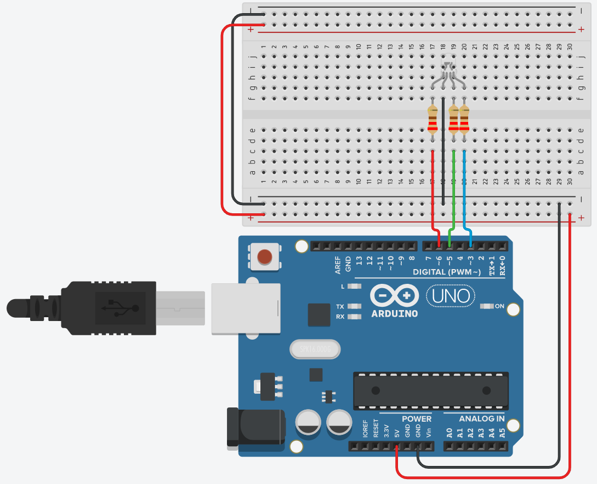

Multi Coloured LED
1 Introduction
In today’s activity we will use an Arduino with and RGB LED to create a range of colours by using different PWM values via code.
The primary tool for this project will be TinkerCad -> https://www.tinkercad.com
2 Circuit
Reproduce the following ciruit, using a cathode RGB LED and 3x 220 \(\Omega\) resistors.

3 Code
Now you need to reporduce the following code:
// Define Pins
#define bluePin 3
#define greenPin 5
#define redPin 6
void setup()
{ // setting the three defined pins as output
pinMode(redPin, OUTPUT);
pinMode(greenPin, OUTPUT);
pinMode(bluePin,OUTPUT);
// setting the pins to be Red On, green and blue Off
digitalWrite(redPin, HIGH);
digitalWrite(greenPin, LOW);
digitalWrite(bluePin, LOW);
}
void loop()
{
setColour(255, 0, 0); // red
delay(1000); // wait a second
setColour(0, 255, 0); // green
delay(1000);
setColour(0, 0, 255); // blue
delay(1000);
setColour(255, 255, 0); // yellow
delay(1000);
setColour(80, 0, 80); // purple
delay(1000);
setColour(0, 255, 255); // aqua
delay(1000);
}
// takes three integers, for red, green and blue uses
// the analogWrite function on each pin to change the colour based
// on those supplied values.
void setColour(int red, int green, int blue)
{
analogWrite(redPin, red);
analogWrite(greenPin, green);
analogWrite(bluePin, blue);
}
Run the code see how the RGB transistions between different colours.
You can change the colour of the LED by setting the values of setColour(int red, int green, int blue) ie setColour(10,50,200) and see what produces. Remember Only the code in the void loop(){...} happens continously so this where you'd add extra colours.
Consider modifying the delay() arguments to see if you can get different speeds. delay(1000) is one second, delay(10) is 0.010 seconds and so on.